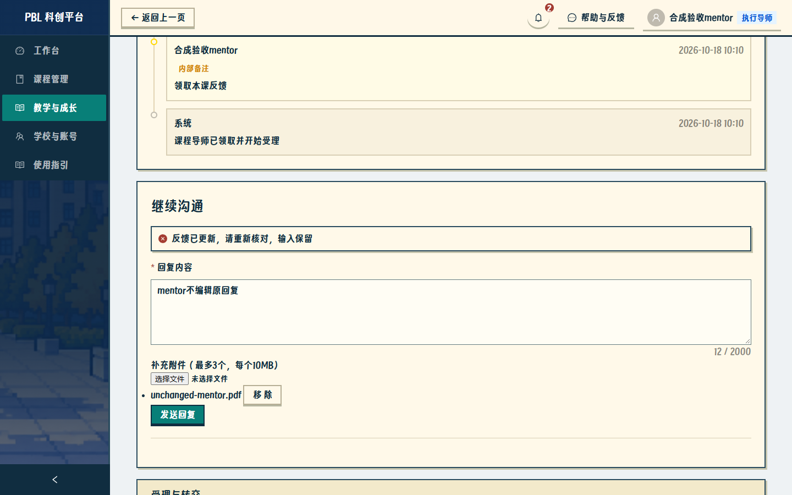
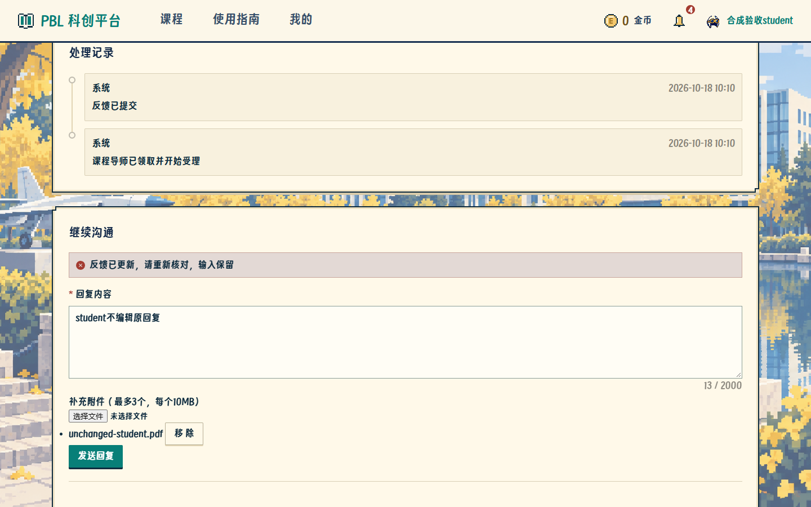
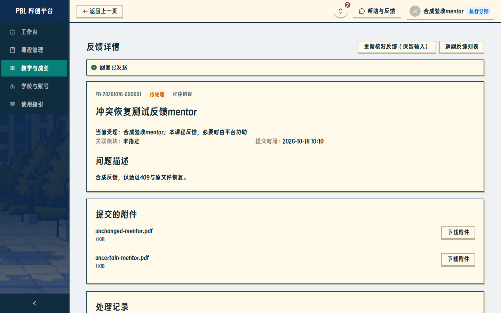
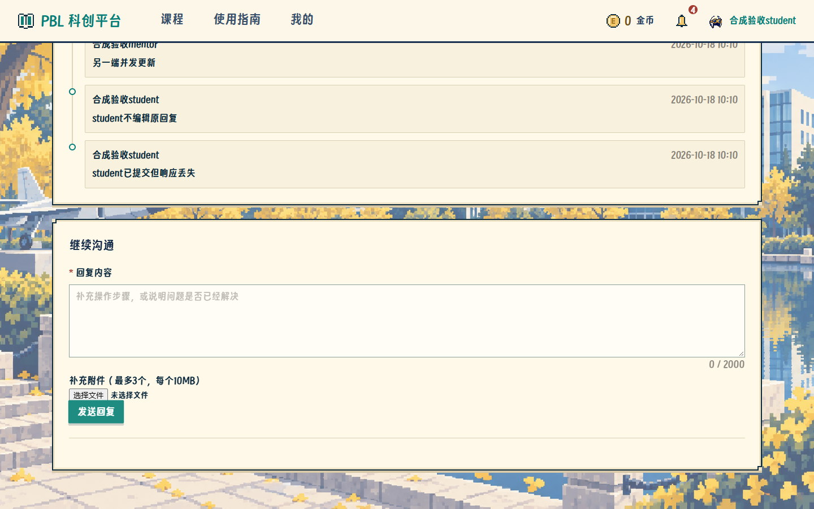
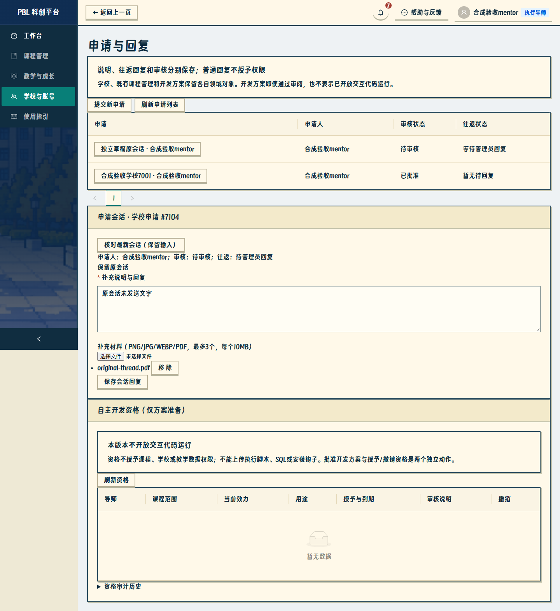
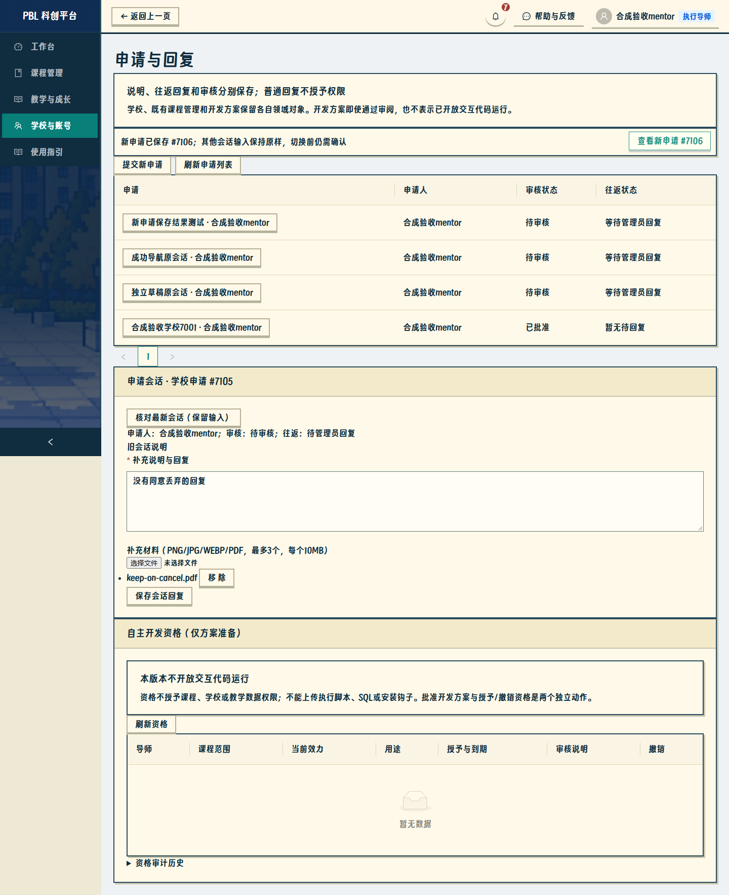
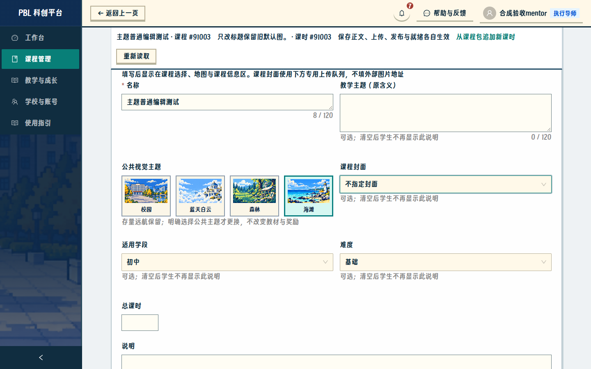
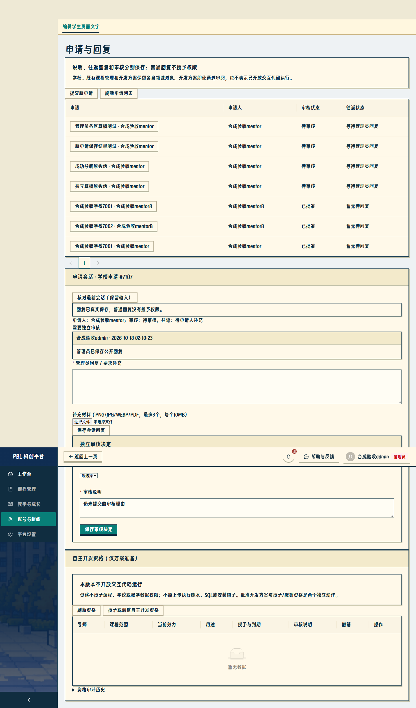
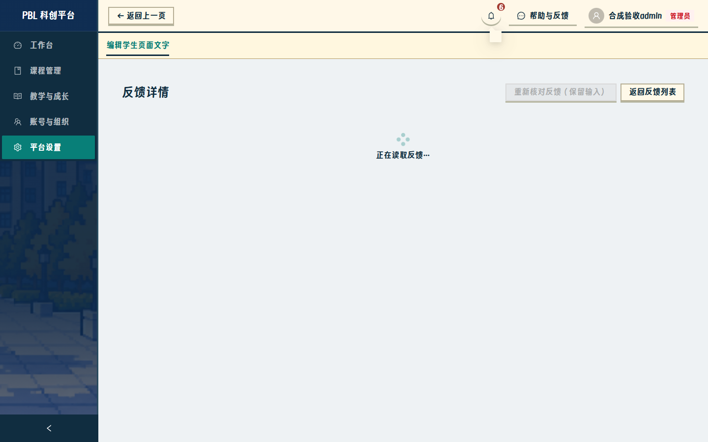
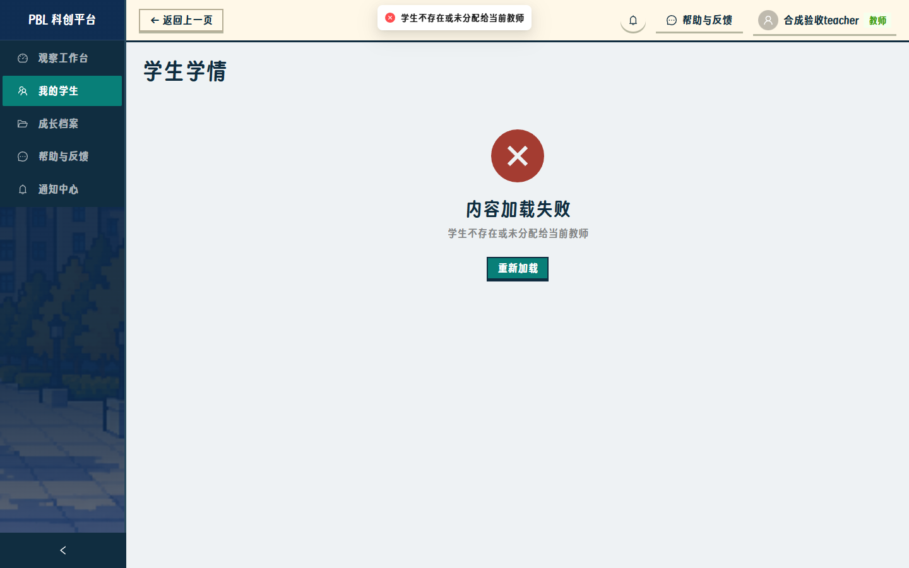

mentor总验收补修：真实截图与记录
只修复核列出的范围；当前本机4187为补修版本。27个关键网页业务场景通过（前三步19+补修8），后端456、前端139，lint与两种构建通过。下图来自实际Edge及隔离真实HTTP/SQLite，非静态原型。
课时/人工文案及奖励历史不重导；26表、5文件重启前后核对一致。24母版及60发布尺寸哈希不变。无新迁移/依赖，无上游PR或公网部署。
01-mentor-409.png

实际网页截图。预期权限拒绝场景也是通过证据；完整原图可点击查看。01-student-409.png

实际网页截图。预期权限拒绝场景也是通过证据；完整原图可点击查看。02-mentor-recovered-once.png

实际网页截图。预期权限拒绝场景也是通过证据；完整原图可点击查看。02-student-recovered-once.png

实际网页截图。预期权限拒绝场景也是通过证据；完整原图可点击查看。03-independent-application-draft.png

实际网页截图。预期权限拒绝场景也是通过证据；完整原图可点击查看。04-saved-application-stayed.png

实际网页截图。预期权限拒绝场景也是通过证据；完整原图可点击查看。05-public-cover-boundary.png

实际网页截图。预期权限拒绝场景也是通过证据；完整原图可点击查看。06-admin-independent-forms.png

实际网页截图。预期权限拒绝场景也是通过证据；完整原图可点击查看。07-fallback-notification-once.png

实际网页截图。预期权限拒绝场景也是通过证据；完整原图可点击查看。08-teacher-relocation-denied.png

实际网页截图。预期权限拒绝场景也是通过证据；完整原图可点击查看。